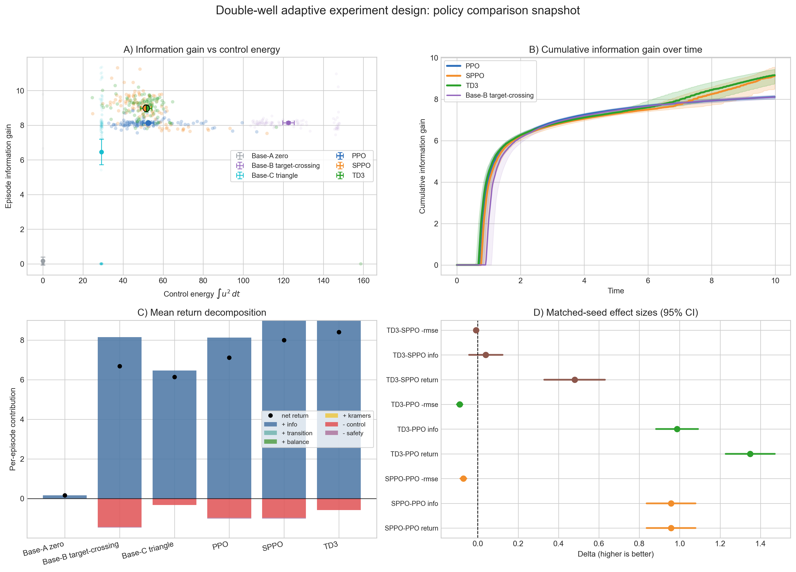

Reinforcement learning for adaptive experiment design
Many physical and biological experiments share a common structure:
- There is a set of hidden parameters \(\theta\) we care about (potential barrier height, free-energy difference, coherence time…).
- We can apply a time-dependent control \(u(t)\) (driving voltage, external force…).
- We observe a noisy stochastic trajectory \(x(t)\).
- We want to learn \(\theta\) as efficiently as possible under experimental constraints.
Traditionally, experiments are designed manually. Experimentalists apply constant forces, linear ramps, or periodic drives, then measurements are collected, and inference happens afterwards.
In optimal control problems, inference happens online and informs the choice of the control \(u(t)\) in real time, given objectives or preferences expressed in a reward function.
So what if we borrowed ideas from control theory and treated experiment design as a sequential decision problem?
In this post, I describe a minimal but physically grounded setup where reinforcement learning (RL) algorithms learn to design driving force protocols that reduce parameter uncertainty faster than naive baselines. Along the way, we encounter sparse-event instability, exploration collapse, and the importance of belief-state control.
A concrete physical example: single-molecule folding under force
Consider a single protein molecule attached between a surface and a bead held in an optical trap (or magnetic tweezers).
- We can control the external force \(F_{\text{ext}}(t)\).
- We measure the molecular extension \(x(t)\) at discrete times \(t_0, t_1, t_2, \dots, t_N\).
- The molecule stochastically switches between folded and unfolded states.
We model this as overdamped Langevin dynamics,
\[ dx_t = -\partial_x U(x_t; \theta)\,dt + F_{\text{ext}}(t)\,dt + \sqrt{2D}\,dW_t, \]
where \(U(x;\theta)\) is a bistable free-energy landscape (double-well potential), \(\theta\) parameterizes thermodynamic quantities, \(D\) is the diffusion constant, and \(W_t\) is a Wiener process.
We use the standard Langevin convention \(\sqrt{2D}\) rather than \(\sigma\) because
\[ D = \frac{k_B T}{\gamma} \]
has a physical meaning where the noise amplitude is tied to temperature and friction via the Einstein relation.
Parameterization
We model the potential \(U(x;\theta)\) as a quartic polynomial, but describe the landscape using physically interpretable quantities,
\[ \theta = (\Delta G, \Delta G^\ddagger, \Delta x), \]
where \(\Delta G\) is the free energy difference between wells, \(\Delta G^\ddagger\) the barrier height, and \(\Delta x\) the distance between wells.
These are precisely the quantities experimentalists aim to estimate.
Framing the experiment as a POMDP
With these assumptions, this experiment naturally falls under the category of partially observed Markov decision processes (POMDP), a natural abstraction for reinforcement learning. Concretely, an agent (representing the experimentalist) observes noisy measurements and selects the next control action applied to the system.
Observations
- Noisy measurements of \(x_t\) at discrete times \(t = t_0, t_1, \dots, t_N\)
Action
- Applied force \(u_t = F_{\text{ext}}(t)\)
Dynamics
- Controlled Langevin SDE
Belief
Because \(\theta\) is unknown, the decision process should operate on a belief state. The agent can use an extended Kalman filter to maintain a Gaussian posterior estimation
\[ P(\theta \vert x_{0:t}) \approx \mathcal{N}(\hat{\theta}_t, P_t) \]
of the true parameter value conditioned on the past observations.
The mean and variance parameters \((\hat{\theta}_t, P_t)\), which are updated after every measurement, become the belief state. This refines the POMDP into a belief MDP.
Action space
At first glance, the control term \(u(t) = F_{\text{ext}}(t)\) seems infinite-dimensional. In practice however, its functional shape is heavily constrained by the experimental setup. It is reasonable to assume that the agent controls it through a real actuator, which has bandwidth limits and inertia, meaning that its amplitude is constrained and that it cannot jump instantaneously. This can be expressed as an inhomogeneous linear ODE
\[ \dot u(t) = \frac1\tau\left( u_{\text{target}}(t) - u(t) \right), \quad \vert u_{\text{target}} \vert < u_{\text{max}}. \]
For each time step, the agent decides a new target \(u_{\text{target}}(t)\) based on its current belief state, it is clipped by \(u_{\text{max}}\), and the real applied force \(u(t)\) is low-pass filtered.
That way the policy cannot produce arbitrarily sharp spikes, control has memory, and the effective action space is constrained by dynamics. This makes the control problem realistically harder.
Note that the method presented here is not constrained by these assumptions and can be easily adapted to other types of actuator dynamics.
Objective
Scientifically, we want to reduce the uncertainty about \(\theta\). A natural formulation is to maximize the information, or negative entropy \(-H(\theta_T)\) of the posterior distribution of these parameters at the end of the experiment, under a finite control budget,
\[ \max \; \mathbb{E}\left[-H(\theta_T)\right] \quad \text{s.t.} \quad \int_0^T u(t)^2 dt \le B. \]
Directly solving this constrained stochastic control problem is difficult, both because of the constraint and the sparsity of the reward. Instead, we approximate it with a shaped reward
\[ r_t = \text{entropy contraction}_t - \lambda_u u_t^2 \]
where the entropy contraction is computed from the reduction of the belief state covariance \(P_t\). This approach provides dense feedback while remaining aligned with the original objective.
Importantly, the reward depends only on the belief state (via the posterior covariance \(P_t\)), not on the true parameters \(\theta\). The agent never sees ground truth — only the same information available to an experimentalist.
Why is this experiment hard?
According to Kramers’ theory, barrier-crossing rates scale exponentially with the barrier height
\[ k \propto e^{-\Delta G^\ddagger / (k_B T)}. \]
This exponential dependence makes transition events intrinsically rare in many physically realistic regimes.
Learning in metastable systems is fragile because informative events — barrier crossings — are intrinsically rare. Early in training, policies may never experience such transitions, leading to sparse-reward instability. If exploration collapses too quickly, the agent converges to energetically cheap but informationally flat behavior — generating almost no posterior contraction. The key to overcoming this is belief-state control: conditioning actions not only on position, but on posterior uncertainty, allows the policy to deliberately induce transitions when they are most informative.
Why reinforcement learning?
In principle, this is a stochastic optimal control problem and one could attempt to derive and solve the corresponding Hamilton–Jacobi–Bellman (HJB) equation. The difficulty is that the natural state of the problem is the belief state \((\hat{\theta}_t, P_t)\) produced by the filter. The control influences not only the physical trajectory \(x_t\) but also the evolution of the posterior covariance. This yields a high-dimensional, nonlinear, controlled filtering problem. The resulting HJB equation would live in belief space and couple physical dynamics with inference dynamics — a setting where closed-form solutions are unavailable and numerical dynamic programming quickly becomes intractable.
Reinforcement learning sidesteps the need to explicitly solve this belief-space HJB. Instead of computing a value function over a continuous, high-dimensional posterior manifold, we directly learn a policy that maps belief states to actuator commands. This effectively approximates the solution to the underlying stochastic control problem without requiring explicit discretization of belief space or analytical tractability. In this sense, RL is not replacing control theory — it is serving as a scalable numerical solver for a belief-space optimal control problem that is otherwise computationally prohibitive.
RL algorithms
To evaluate the feasibility and benefit of adaptive experiment design in this metastable setting, we compare three reinforcement learning algorithms:
- Proximal Policy Optimization (PPO)
- Stratified PPO (SPPO)
- Twin Delayed Deep Deterministic Policy Gradient (TD3)
These were chosen to probe different aspects of the control problem: stochastic policy gradients, variance reduction under heterogeneity, and deterministic off-policy control.
PPO: On-policy stochastic policy gradient
PPO is a widely used on-policy policy-gradient method. It optimizes a stochastic policy \(\pi_\theta(u \vert s)\) using clipped surrogate objectives and generalized advantage estimation (GAE). We include this algorithm for two reasons. First, it is a strong, well-understood baseline for continuous control. Second, its stochastic policy explicitly maintains action entropy, which is important in sparse-event problems, to actually detect events. Because metastable transitions are rare, exploration is structurally necessary. PPO’s entropy regularization provides a direct mechanism for maintaining exploration during early learning.
However, PPO is on-policy: experience is discarded after each update. In sparse-event environments, this can reduce sample efficiency when informative transitions are rare.
Stratified PPO (SPPO): PPO with stratified advantage normalization under heterogeneous regimes
During training, each episode samples different true landscape parameters (barrier heights, asymmetries, etc.). Some regimes are intrinsically easier as they lead to frequent transitions and stronger gradients. Others are harder and produce weaker signals.
Standard PPO normalizes advantages across the entire batch. This can cause “easy” regimes to dominate updates. To address this problem, we can modify PPO by normalizing advantages within groups of similar regimes,
\[ \tilde A^{(g)} = \frac{A^{(g)} - \mu_g}{\sigma_g + \epsilon}, \]
where \(g\) indexes the regime groups. This stratification is a variance-reduction technique, and hereafter we call the resulting algorithm stratified PPO, or SPPO.
It is important to note that the regime label is used only for training-time normalization. It is not provided to the policy, and evaluation is performed without stratification, to avoid any unfair advantage.
SPPO tests whether learning instability arises from gradient imbalance across heterogeneous system instances.
TD3: Deterministic off-policy actor–critic
TD3 is a deterministic actor–critic method designed for continuous control. It learns a deterministic policy \(\mu_\theta(s)\) along with two Q-functions to reduce overestimation bias.
TD3 differs from PPO in two critical ways. First, it is a deterministic policy, the learned control is a direct mapping from belief state to force. Second, a replay buffer reuses experience across updates, improving sample efficiency. In metastable systems, informative transitions are rare but highly valuable. Off-policy replay allows TD3 to reuse those rare events multiple times, potentially stabilizing learning.
Because our action space is one-dimensional and actuator-constrained, deterministic control is sufficient to represent optimal strategies. TD3 therefore provides a natural alternative to stochastic policy-gradient methods.
Training procedure
To train the policies, we use simulation-based domain randomization. At the beginning of each episode, we sample a fresh set of physical parameters \(\theta = (\Delta G, \Delta G^\ddagger, \Delta x)\) from a predefined distribution representing heterogeneous molecules. These parameters remain fixed for the duration of the episode, defining a specific free-energy landscape. The agent then interacts with this environment over a fixed time horizon: at each timestep it observes the current belief state \((\hat{\theta}_t, P_t)\) from the EKF and the current physical state, outputs a target force \(u_{\text{target}}\), the actuator dynamics produce the applied force \(u_t\), the stochastic Langevin system evolves, and the filter updates the posterior. The reward at each step is computed from posterior entropy contraction minus control cost.
This process is repeated across many independently sampled episodes. On-policy methods (PPO/SPPO) update the policy using batches of complete trajectories, while TD3 stores transitions in a replay buffer and performs off-policy updates. Crucially, because each episode is generated from newly sampled parameters, the learned policy does not specialize to a single landscape but instead acquires an amortized strategy for probing a distribution of metastable systems.
Baseline policies
To contextualize the performance of the learned policies, we evaluate three simple baselines under the same physical and actuator constraints.
Zero control
The simplest reference is passive observation:
\[ u_{\text{target}}(t) = 0 \quad \forall t. \]
This policy applies no actuation and therefore incurs no control cost. It relies purely on spontaneous thermal fluctuations to generate barrier crossings. As such, it serves as a lower bound on achievable information gain in the absence of active probing.
Target-crossing feedback
This heuristic introduces a minimal form of closed-loop control.
A scalar commanded control \(u_{\text{cmd}}\) is maintained and updated at each control step based on the recent empirical crossing rate:
\[ u_{\text{cmd}} \leftarrow \mathrm{clip}\big(u_{\text{cmd}} + k (r^* - \hat{r}),\, [-u_{\max}, u_{\max}]\big), \]
where \(\hat{r}\) is the observed crossing rate over a sliding window and \(r^*\) is a desired target rate.
The intuition is simple: if transitions are too rare, increase forcing; if they are too frequent, back off. This policy explicitly tries to regulate crossing frequency, but does not reason about posterior uncertainty or which parameters remain poorly identified.
Periodic triangle waveform
The final baseline is a deterministic open-loop driver:
\[ u_{\text{target}}(t) = \mathrm{clip}\big(A \cdot \mathrm{triangle}(t; \text{period}, \text{phase}),\, [-u_{\max}, u_{\max}]\big). \]
This policy applies a periodic forcing intended to sweep the system back and forth across the barrier, probing for resonance-like enhancement of transitions. It represents a classical experimental strategy: apply structured excitation and observe the response, without adapting to the evolving belief state.
Results and lessons

The first thing to notice is that an external force is necessary. The zero-control baseline barely reduces uncertainty. Hand-designed waveforms — like pushing toward the barrier or applying a triangle drive — do better, but they are blunt instruments: they inject energy without really adapting to what the filter has learned so far.
The RL policies behave differently. Instead of just “shaking the system,” they learn to guide it toward the barrier region in a way that produces informative transitions without wasting control effort. You can see this in the information-versus-energy plot: for roughly the same control budget as the better heuristics, the learned policies extract more posterior entropy reduction. TD3 and the stratified PPO variant sit slightly above vanilla PPO, suggesting that algorithmic stability and variance reduction matter in this sparse-event setting.
The time-resolved curves tell an even clearer story. The learned policies quickly drive the system into regimes where barrier crossings become likely, accelerating early information gain. They do not just push harder — they push smarter. The matched-seed comparisons confirm that these improvements are consistent across sampled environments, not just lucky draws. And the reward breakdown shows that the performance gains are coming from genuine information extraction, not from gaming some auxiliary term.
In short, reinforcement learning appears to discover probing strategies that are qualitatively different. It learns when to destabilize the system, when to hold it near the barrier, and how to balance energy expenditure against statistical payoff. What emerges is not a fixed waveform, but an adaptive experiment policy that generalizes across a family of metastable landscapes.
Outlook
Although we illustrated the framework on a double-well system, the idea is much broader. The same structure appears in spectroscopy, chemical reaction rate estimation, metastable material characterization, and many other physical experiments. In each case, experimenters do not merely observe a system — they perturb it in order to extract information. The central object is not the state alone, but the belief over physical parameters, and the goal is to steer the system so that this belief contracts efficiently.
Viewed this way, scientific experimentation becomes a closed-loop stochastic control problem in belief space. Actions influence trajectories, trajectories influence measurements, measurements reshape posterior uncertainty, and that updated belief should determine the next action. Classical Bayesian optimization treats experiments as expensive function evaluations: pick \(x_i\), observe \(f(x_i)\), update a surrogate, repeat. In our setting, however, the input \(x_i\) is fixed by the physical system; what we can control is how we probe it. The cost lies not in choosing the point, but in generating informative trajectories. Reinforcement learning provides a way to optimize these sequential, dynamic probing strategies — effectively amortizing experiment design across a distribution of systems.
Importantly, reinforcement learning does not replace physics. It operationalizes it. The agent relies on a model of the system and an explicit Bayesian update; the reward is derived from posterior entropy contraction in physically meaningful descriptors. Without a model, there is no belief state to control. In that sense, this approach sits at the intersection of mechanistic modeling and learning — not as a substitute for theory, but as a computational tool for solving the control problems that theory naturally generates.
Much of “AI for science” focuses on discovery: learning surrogate models, predicting structures, accelerating simulations. Far less attention has been paid to the design of experiments themselves — to the policies that decide how we probe systems in the first place. If experimentation is fundamentally about reducing uncertainty under constraints, then treating it explicitly as stochastic control over belief states may offer a useful unifying lens.
Acknowledgement
My interest in optimal experiment design in noisy settings traces back to numerous conversations with Rodrigo Teixeira during my time at Roche. I am grateful for his thoughtful insights into how information can be teased out of complex biophysical systems — many of which continue to shape how I think about these problems.